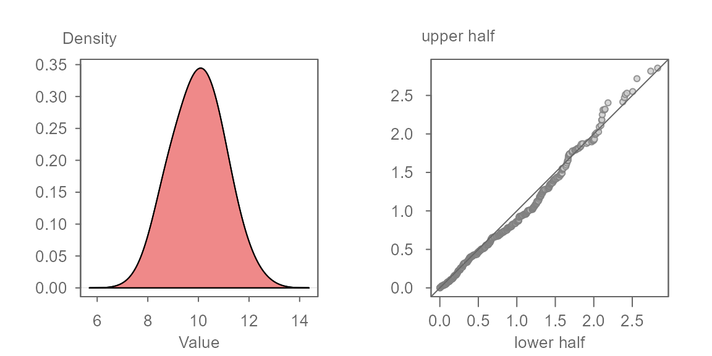
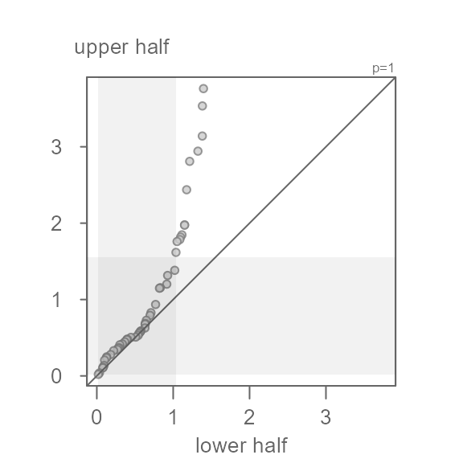
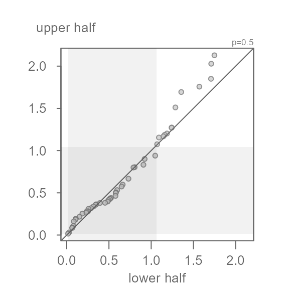
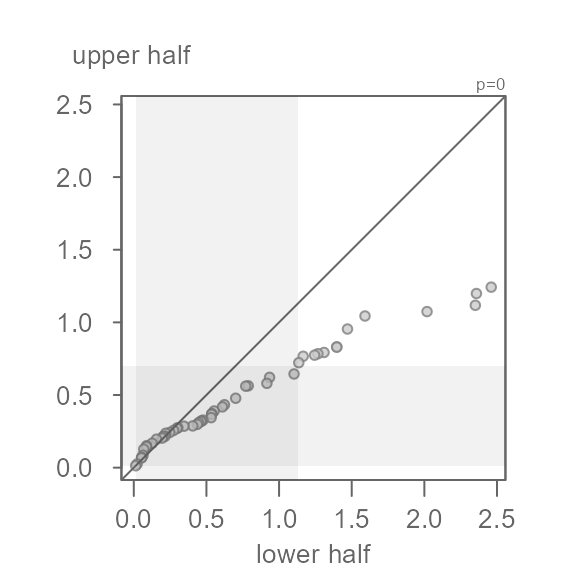

Introduction
The symmetry QQ plot is inspired by Chambers et al.’s symmetry plot which pairs the quantiles of the lower half of a batch of values with matching quantiles of the batch’s upper half of values. The median value is used to define the halves as follows:
\[ lower\ half = median - x_i \]
\[ upper\ half = x_{n+1-i} - median \]
where \(n\) is the number of values in \(x\), \(i\) = 1 to \(n/2\) if \(n\) is even or \(i\) = 1 to \((n+1)/2\) if \(n\) is odd.
The plot is interpreted no differently than a QQ plot. If the data are symmetrical about the batch’s median value, the points will hug the \(x=y\) line. For example, given a batch of 1000 normally distributed values shown in the left density plot, we would expect the symmetry QQ plot to show the points very close to the \(x=y\) line as shown in the right plot.

The axes in the symmetry QQ plot show the distance of each observation in the batch to that batch’s median value. The units are those of the batch. Points that are close to 0 are those observations closest to the median. Points that are furthest from 0 are those that are at both tail ends of the distribution.
The symmetry QQ plot function
The symmetry QQ plot is generated using the eda_sym()
function.
Before exploring the function and its output, let’s first generate some data. Here, we’ll create a slightly skewed dataset (one that is skewed towards larger values).
Next, let’s generate the symmetry QQ plot.

If you are familiar with the use of eda_qq as an
empirical QQ plot function, you are familiar with the grey boxes that
highlight the mid 75% of the values. Here, given that the x and y axes
are mapping the lower and upper halves of the batch, the lower part of
the grey region is bounded by 0 given that 0
is defined as the batch’s mid-point.
In this example, the points do not hug the \(x=y\) line, even for the mid 75% of the
values covered by the grey region. This is to be expected given that we
generated a right skewed dataset. For example, a point in the lower half
of x that is about 1 unit away of the median
has a matching quantile in the upper half of x that is
about 1.4 units away of the median placing it further away
from the median than its lower half counterpart. This skew becomes more
pronounced as we move closer to the tails. The furthest point away from
the median is about 1.4 units for the lower half and a
little less than 4 units away for the upper half.
The eda_sym function allows for the use of a
re-expression. This feature can be helpful if one seeks to symmetrize a
batch of values using a power transformation. For example, if we wanted
to render x more symmetrical, we could try a power of
0.5 (i.e. the square root) by setting the argument
p = 0.5.
eda_sym(x, p = 0.5)
Here, the square root transformation does a good job in rendering
x more symmetrical. Note that the points do not hug the
\(x=y\) exactly–this is fine. What we
don’t want to see is a systematic bend in the points away from the \(x=y\) line. For example, if we were too
aggressive with the power transformation and chose a log transformation
(p = 0), we would end up with a left skewed batch of
values.
eda_sym(x, p = 0)